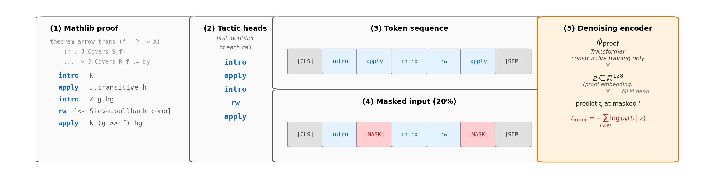
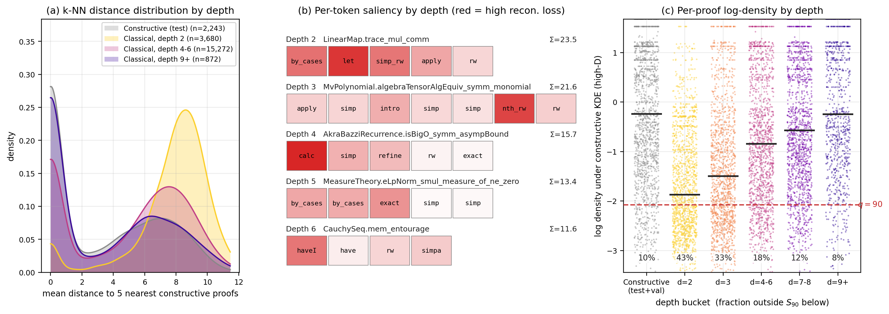

Uses Lean 4's kernel axiom tracking to measure the geometric signature of Classical.choice in 42,355 Mathlib proof embeddings.
Abstract
The axiom of choice has divided the foundations of mathematics for over a century, but the distinction between classical and constructive proofs has remained a philosophical and methodological one. We use Lean 4's kernel-level tracking of axiom dependence to show that the axiom of choice has a measurable geometric correlate in proof space that obeys a one-parameter mixture law and has operational consequences for neural theorem provers. To do this, we partition $471{,}260$ declarations of Mathlib by transitive dependence on the axiom of choice and represent a filtered population of $42{,}355$ traced theorems by their sequences of tactic invocations. We use the constructive proofs in this dataset to train a self-supervised proof encoder and show that when using it to measure classical proofs, three complementary measurements (anomaly score, reconstruction loss, and density-superlevel containment) exhibit a common decline with the proof's distance from the axiom in the dependency graph, from sharp separation at the shallow boundary (AUC $0.847$ at distance $2$) to indistinguishability at distance $9{+}$. Robustness controls show that the signature survives length, file, author, and topic controls, and replicates under full-source encoders trained on normalised proof source. Operationally, we show that on an evaluation sample of $251$ Mathlib theorems, Lean's aesop tactic solves constructive theorems at $13\times$ the rate of classical ones, and a neural-guided hybrid using the ReProver tactic generator compresses the gap to $5\times$. The geometric anomaly score predicts aesop failure beyond proof length, providing an operational link between the geometric signature and prover performance.
Problem
The classical/constructive distinction in proofs has remained philosophical. Whether it has a measurable geometric correlate in proof space, and whether that correlate has operational consequences for neural theorem provers, was unknown.
Approach
Partitions 471,260 Mathlib declarations by transitive dependence on Classical.choice and represents 42,355 traced theorems by tactic invocation sequences. Trains a self-supervised denoising proof encoder on constructive proofs and measures classical proofs via anomaly score, reconstruction loss, and density-superlevel containment.

Figure 2 : Proof representation and denoising pipeline. Five stages, left to right, illustrated on a real Mathlib proof of GrothendieckTopology.arrow_trans ( <- and >> in the body stand for the Lean unicode \leftarrow and \gg ). (1) A tactic-mode proof body, with each line a tactic invocation and the leading identifier in bold blue. (2) The tactic head of each invocation is its first identifier, e
Results
At depth 2 from Classical.choice, k-NN anomaly detection achieves AUC 0.847, declining to 0.507 (chance) at depth 9+. The signature survives length, file, author, and topic controls. Lean's aesop solves constructive theorems at 13x the rate of classical ones; a neural-guided ReProver hybrid compresses the gap to 5x.

Figure 1 : The depth law in three views. (a) k -NN distance distribution by depth : histograms of mean Euclidean distance to the 5 nearest constructive-training proofs (constructive-standardised encoder embeddings; Appendix G ). (b) Per-token saliency : one representative classical proof per depth bucket; cell colour intensity is the single-token reconstruction loss under the constructive encoder,